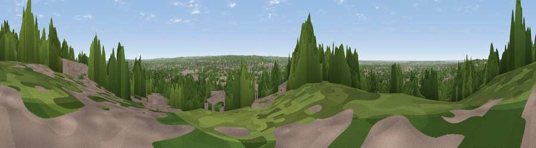

Viewpoint near Sydenham
#36342 in England · top 49% of its area beats it · near SydenhamThe view, rendered

A 360° render of this exact spot computed from the terrain model, tree cover and land cover — summer colours, afternoon light, calibrated against photographs of famous viewpoints. Real trees, hedges and buildings will differ in detail.
The panorama
Grey silhouette: terrain skyline in each direction (720 bearings, Earth curvature and refraction included). Dashed green: skyline with trees (+15 m) and buildings (+8 m) as obstacles. Blue strip: how far the ground is visible on each bearing.
Where the view opens
Wedge length = distance to the farthest visible ground on that bearing (vegetation-aware). Rings at 10, 25 and 50 km.
What fills the view
56% built-up · 37% woodland · 7% grassland
Angular shares of the visible panorama (visual magnitude), not map area. Landscape diversity 0.40 (0–1 Shannon).
Key numbers
More beautiful places nearby
The staircase of upgrades: each row has a higher view potential than everything closer. Driving times are estimates from straight-line distance, calibrated against real road routing — check an actual route before setting out.
| Place | Direction | Drive | Score |
|---|---|---|---|
| Viewpoint near Sydenham | N · 1 km | ~2 min | 37.4 |
| Viewpoint near Sydenham | NNE · 4 km | ~9 min | 39.9 |
| Viewpoint near Addington | SSE · 5 km | ~11 min | 40.8 |
| Viewpoint near Sydenham | NNE · 5 km | ~11 min | 48.5 |
| Viewpoint near Croydon | S · 5 km | ~11 min | 50.1 |
| Viewpoint near Catford | NNE · 6 km | ~12 min | 51.4 |
| Viewpoint near Eltham | NE · 12 km | ~23 min | 52.2 |
| Viewpoint near Woldingham | SSE · 13 km | ~24 min | 55.0 |
51.40419, -0.08750 · source: screening · position refined by local search. Computed location — check access rights before visiting.